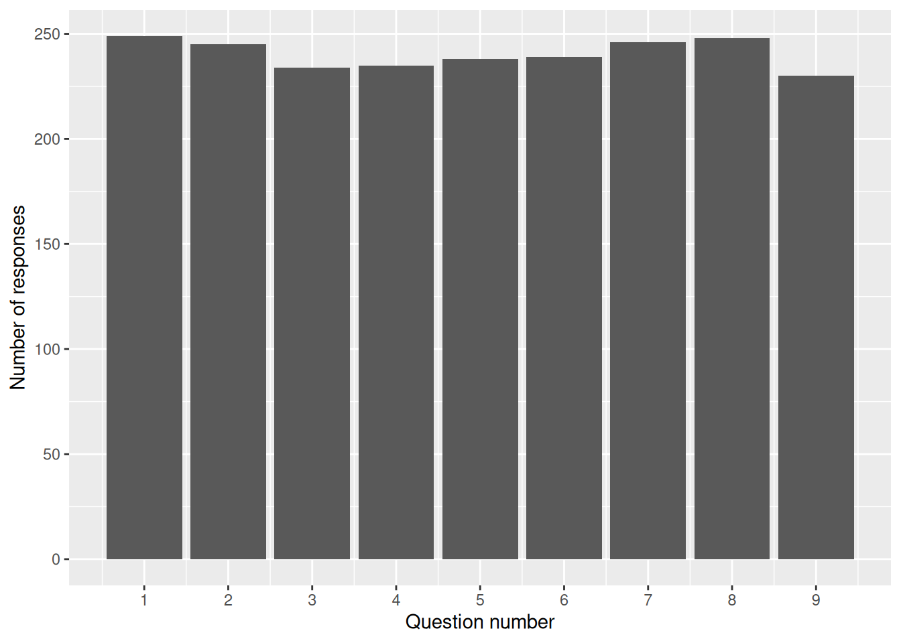
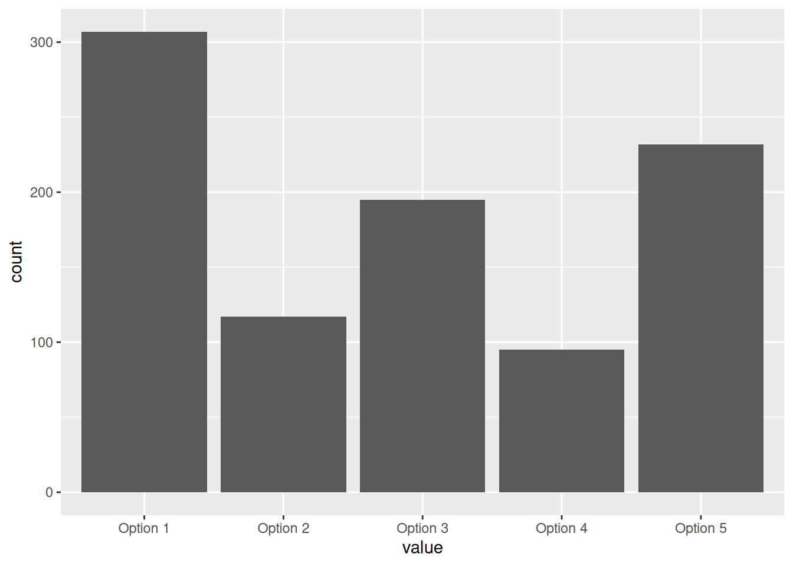

Introduction
- surveys: groups of questions designed to help you understand something in a population
- a quick and low-tech way of gathering information about a topic
- definitely different from ‘proper’ qualitative research, etc
- not tech-specific: paper, in-person, web form…
- usually completed by the members of that sample directly (or their advocate) rather than by a professional
The population
- the key idea to build useful surveys: what’s the population?
- population: some specified group of people - service users, general public, left-handed furriers from Dundee…
- surveys will usually be asked of a sample of a population (unlike a census, where everyone replies)
Core survey ideas
- topic: what’s the survey about?
- coverage: who can fill in the survey?
- sample: who actually did fill in the survey?
- completion: who completed the survey questions?
- discrimination: what did the different answers tell us about our topic?
An example: favourite TV show
- surveys are often about complicated topics
- if it’s easy, you don’t need a survey!
- we’re going to start with a simple topic: what TV programmes do people like?
Before we start…
Some questions for you:
- do we really understand our topic well enough to turn it into questions?
- what’s the population we’re interested in?
- how should we get good coverage (and what does good look like for us?)
- we’ll work in small groups
- 3 minutes to sketch out a survey that:
- investigates part of our favourite TV show topic
- in a specific population
- and how you’re going to achieve coverage
- report back in the chat
Quick wins
- be specific
- identify a specific population, and tailor the survey to them
- worry about completion (and include that in your results)
- have a plan about how to use the results (and maybe work backwards from that)
Questions
- what questions do we need to ask people to find out about our topic?
- how do they need to be adapted to work for our population?
- what does it tell us about our topic?
- what are we trying to discriminate?
Contradictory suggestions about questions
A personal rationale for these contradictory bits of advice: keeping users happy and engaged is key to writing good survey questions. It should be obvious what a question is getting at, why it’s being asked.
- suggestion: align your questions with your topic, and make it obvious. Don’t leave users pondering questions like “I wonder why they’re interested in that??”
- suggestion: make your questions discriminate between different options, and make each of your questions obviously different. Avoid 29 fractionally-different questions about basically the same thing
- suggestion: include absolutely as few questions as possible
Why so short?
Most people have some degree of survey fatigue. Don’t make that worse by writing a three-volume epic. Tread lightly on your respondent’s time, and make it clear what the benefit of answering is.
- long surveys have poor discrimination (because people get bored)
- long surveys have poor response rates
- let users pick options rather than generate text themselves wherever possible
- long surveys produce sampling problems, where only the most motivated will complete. And the views of the most motivated don’t reflect the views of most people.
- sample: who actually did fill in the survey?
- completion: who completed the survey questions?
- discrimination: what did the different answers tell us about our topic?
- again, in small groups…
- 1 minute to review your earlier topic/population/coverage note
- 3 minutes to sketch 2 questions to:
- be informative about your topic
- discriminate different views about important parts of your topic
- but be as simple as possible
- report back in the chat
Then, after the data collection…
- what sort of sample did we get?
- how does that compare with our planned coverage?
- what did our completion look like?
- analysis (non-technical!)
- what do we do with the results?
That’s a lot to think about!
- so let’s try to look at the core analytical decisions by looking at a terrible survey
- What’s your favourite TV programme (free text)
- Do you like comedy or drama? (exclusive choice between yes and no)
- an un-directed Lickert-like set of responses for
- I like longer programmes
- I like shorter programmes
- I have a TV
- I am under seven feet tall
- Do you have a second favourite TV programme? (free text)
- How long have you watched your favourite programme for? (exclusive choice between less than a year, less than two years, more than three years)
- Who are you? (long free text)
What did we learn?
- even with a terrible survey, we can definitely learn something
- for example, we’ve got information about people’s favourite TV programmes:
| name | value | n |
|---|---|---|
| What’s your favourite TV programme | Taskmaster | 6 |
| What’s your favourite TV programme | Slow Horses | 5 |
| What’s your favourite TV programme | Brooklyn 99 | 4 |
| What’s your favourite TV programme | Firefly | 4 |
| What’s your favourite TV programme | Friends | 4 |
| What’s your favourite TV programme | Grey’s Anatomy | 4 |
| What’s your favourite TV programme | Severance | 4 |
Note that these favourite programmes are free-text responses. In cases like these, free text (where people can reply however they choose) are really the only way that a question like this could be structured - unless you somehow have a tidy list of all the top TV programmes that people might choose.
Free text is though much harder to analyse than yes/no choices, or numeric ratings, or similar ways of collecting information. They can also put people off if overused, and we might start to worry about sampling in a survey with lots of long free text.
This example shows a very specific gotcha: many analytical tools are case-sensitive, so “SLOW HORSES” would be grouped differently might be different from “slow horses”. We’ll find similar difficulties with variant punctuation too, so “Grey’s Anatomy” and “Greys Anatomy” might become separated. Let’s show that now in our data:
| name | value | n |
|---|---|---|
| What’s your favourite TV programme | Slow Horses | 6 |
| What’s your favourite TV programme | Taskmaster | 6 |
| What’s your favourite TV programme | Greys Anatomy | 5 |
| What’s your favourite TV programme | Brooklyn 99 | 4 |
| What’s your favourite TV programme | Firefly | 4 |
| What’s your favourite TV programme | Friends | 4 |
| What’s your favourite TV programme | Severance | 4 |
Personally, I’m delighted to see Slow Horses creeping up the list. And that’s a cause for serious concern: all free text will definitely need some kind of tidy-up at the analysis stage. It’s hard not to favour your favourites there, and it took me a while to realise that e.g. we had “Grays Anatomy” and “Gray’s Anatomy” in our data. To avoid that sort of bias, I’d be keen to try and pre-designate what text fixing you’re planning to do before you collect the data (so all lower-case without punctuation, and with manual tidying-up of spelling, for example).
n
n is probably the most important single number in surveys, because it tell us how many responses we received as part of our sample. So our sample consists of 251 responses. Related, we could also estimate a response rate from that figure. Our coverage - so the number of people invited to fill in the survey - was approximately 2000 people, because that’s the daily average number of active users on the KIND network at present. Dividing n by that number gives us a response rate of approximately 13%. That’s pretty fair for a casual survey like this which has gone out online, and many thanks to the network members - our population - for volunteering their time.
Discrimination
What else can we learn? Most of the questions here don’t really tell us anything at all, other than our sample being really quite diligent, and keen to try and fill-in questions that made no sense at all. In other words, these answers fail to discriminate anything from anything else: we don’t know what either response really means here: 🎭 which do people like best?
| name | value | n |
|---|---|---|
| Do you like comedy or drama? | Yes | 222 |
| Do you like comedy or drama? | No | 23 |
| Do you like comedy or drama? | NA | 6 |
Oh dear, that’s not very helpful. Unfortunately, there are several similar questions where - although our long-suffering army of survey volunteers have diligently completed responses - because the responses aren’t clearly specified, we’re unable to understand what those users might have thought. Another example:
| name | value | n |
|---|---|---|
| I like longer programmes | Option 1 | 80 |
| I like longer programmes | Option 3 | 57 |
| I like longer programmes | Option 2 | 33 |
| I like longer programmes | Option 4 | 32 |
| I like longer programmes | Option 5 | 32 |
| I like longer programmes | NA | 17 |
This is quite an important one, because it demonstrates the (faulty) use of an important kind of preference-scale known as a Likert. That’s (usually) a five-point scale that’s useful for assessing agreement/disagreement. So the usual format would be to pose a question - “how do you feel about slapstick”
- working alone this time, please come up with a better group of questions to probe these issues
- two minutes, and then please paste them into the chat
Missing data
| name | value | n |
|---|---|---|
| I like shorter programmes | Option 3 | 68 |
| I like shorter programmes | Option 2 | 52 |
| I like shorter programmes | Option 1 | 45 |
| I like shorter programmes | Option 5 | 37 |
| I like shorter programmes | Option 4 | 33 |
| I like shorter programmes | NA | 16 |
Expect missing data (the NA values, here). You can potentially force users to answer all your questions, but that comes at the risk of potentially tempting them to send you a lot of quickly-generated gibberish.
Drop-off
Interestingly, our respondents managed to stick with the terrible survey, and nearly everyone answered nearly every question:

That’s likely to be a result of me asking people, as politely as I could, to please please stick with the terrible survey and answer as diligently as possible. I suspect a real survey like this one would show a much stronger drop-off towards the later questions.
Alignment
Some of your questions should probably be used to find out about your sample. Again, think carefully about both the theme of the question, and its ability to actually distinguish what you need to know:
| name | value | n |
|---|---|---|
| I am under seven feet tall | Option 1 | 91 |
| I am under seven feet tall | Option 5 | 87 |
| I am under seven feet tall | Option 3 | 29 |
| I am under seven feet tall | Option 4 | 20 |
| I am under seven feet tall | Option 2 | 12 |
| I am under seven feet tall | NA | 12 |
In fact, from this and the other three questions using the same un-useful scale, all we see is that people irrationally prefer some points of the scale to others:

Scope of responses
You should also think about the likely scope of responses, especially if you’re unwise enough to ask hugely vague “who are you”-type questions
| name | value | n |
|---|---|---|
| Who are you? | NA | 21 |
| Who are you? | Me | 7 |
| Who are you? | Anon | 4 |
| Who are you? | None of your Business | 4 |
| Who are you? | A Friend | 3 |
We almost always will need to aggregate responses: this sort of question leads to impossible to aggregate responses. This question needed some honing down (e.g. into age group or occupation or similar) and replaced with a couple of closed questions.
Answer options
Make the alternatives as standard and coherent as possible in exactly the way that the example below isn’t. I’d have thought that asking for a number of years would have been a better way of writing this question. It’s worth mentioning that iteratively developing and testing questions is probably a good idea if you’re doing this sort of work at larger scales.
| name | value | n |
|---|---|---|
| How long have you watched your favourite programme for? | More than Three Years | 191 |
| How long have you watched your favourite programme for? | Less than Two Years | 29 |
| How long have you watched your favourite programme for? | Less than a Year | 28 |
| How long have you watched your favourite programme for? | NA | 3 |
Wording options
It’s probably a good idea to group similar questions together. We’d also suggest trying to word similar questions as similarly as possible. For example, in our terrible survey we received quite different responses when we asked “What’s your favourite TV programme” as compared to the follow-up “Do you have a second favourite TV programme?”, which received large numbers of (facetious) yes/no answers:
| name | value | n |
|---|---|---|
| Do you have a second favourite TV programme? | Yes | 35 |
| Do you have a second favourite TV programme? | No | 18 |
| Do you have a second favourite TV programme? | Friends | 5 |
| Do you have a second favourite TV programme? | NA | 5 |
| Do you have a second favourite TV programme? | Gilmore Girls | 4 |
I’m not certain why the follow-up about second-favourite shows didn’t seem to have any groups in it, but I do wonder if it’s because it came at the end of the survey when we’d exhausted the patience of our poor sample population:
| name | value | n |
|---|---|---|
| Do you have a second favourite TV programme? | Yes Shhh | 1 |
| Do you have a second favourite TV programme? | Paul o Gradys Love of Dogs | 1 |
| Do you have a second favourite TV programme? | House | 2 |
| Do you have a second favourite TV programme? | True Blood | 1 |
| Do you have a second favourite TV programme? | NA | 5 |
Acknowledgments
Many thanks to the several hundred members of the KIND network who donated their time and brain-power to trying to complete deliberately badly-built surveys. I’m especially indebted to Kenneth Mack (Healthcare Improvement Scotland) who suggested that TV programme preferences would be a good venue to explore issues about building effective surveys.